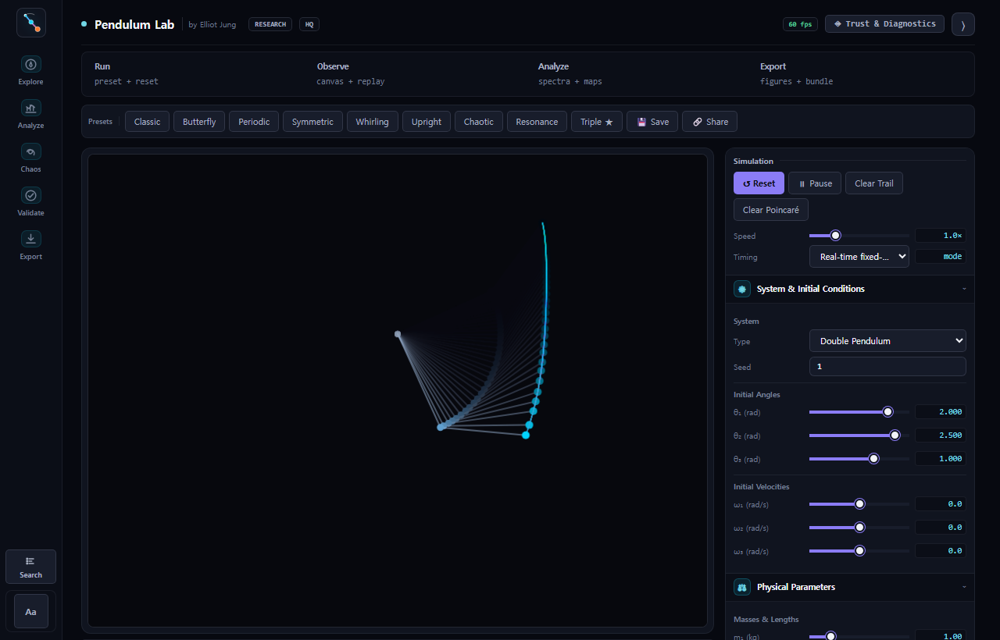

{kind=link}
13종의 주력 적분기
Euler부터 RK4, 임베디드 RKF45, Dormand-Prince 5(4), DOP853 8(5,3), Gauss-Legendre 4/6, Yoshida-4, Gragg-Bulirsch-Stoer, L-stable TR-BDF2까지 — 각각 이론 차수를 실측으로 확인했고, 조건수 진단이 붙은 완전 뉴턴 음함수 중점법을 더했습니다.
가벼운 캔버스 계기가 거의 동일한 두 이중진자 릴리스를 실시간으로 그립니다. 시안과 로즈 궤적은 함께 출발하지만, 민감성이 지배하는 순간 서로 갈라집니다.
첫 클릭에 준비된 실험 상태가 열립니다: 입문자용 나비 프리셋, 학생용 랴푸노프 판독, 혹은 리뷰어 증거가 곁에 있는 연구 워크벤치.

머리카락 한 올 차이로 놓은 두 이중진자는 같은 호를 그립니다 — 어느 순간까지만. 궤적은 지수적으로 벌어지고, 예측은 노이즈로 무너집니다. 그 벌어짐의 속도가 곧 최대 랴푸노프 지수이며, 모든 매개변수를 공개하고 모든 불확실성을 책임지며 그것을 정직하게 측정하는 일이 이 분야의 전부입니다.
Identical start · 1.0e-3 rad apart → exponential divergence
수치해석·물리·카오스 진단·시각화·재현성의 다섯 분야를 닫힌형 해, 에너지, 독립 레퍼런스 기준으로 각각 단위 테스트했습니다.
Euler부터 RK4, 임베디드 RKF45, Dormand-Prince 5(4), DOP853 8(5,3), Gauss-Legendre 4/6, Yoshida-4, Gragg-Bulirsch-Stoer, L-stable TR-BDF2까지 — 각각 이론 차수를 실측으로 확인했고, 조건수 진단이 붙은 완전 뉴턴 음함수 중점법을 더했습니다.
최대·전체 스펙트럼 랴푸노프 지수, 공변 랴푸노프 벡터, Kaplan-Yorke 차원, SALI/FLI, 푸앵카레 단면, 0–1 테스트, RQA, 베이슨 엔트로피, 자동 분기 스윕 — 정의되는 곳마다 방법별 진단과 불확실성을 함께 제공합니다.
이중·삼중·일반화 N-진자, 구동 및 감쇠-구동 진동자, Kapitza·자기 진자, 탄성 스프링, 결합 진자 격자, 그리고 E와 Lz 보존량 판독이 달린 진짜 3D 구면·로프 진자까지.
순수 캔버스에 색각 안전 Okabe-Ito 렌더러; 위상 초상, 푸앵카레 맵, FTLE 능선, 그리고 데스크톱·모바일 기준선에 걸쳐 결정론적 SVG와 시각 회귀 지문을 갖춘 출판용 그림 파이프라인.
결정론적 재생 메타데이터가 담긴 해시 스탬프 실행 매니페스트, 파일별 SHA-256 무결성 검사(ZIP 호환 CRC32 포함)를 갖춘 진짜 ZIP 연구 번들, IndexedDB 장기 저장소, 그리고 소스 커밋에 묶인 증거 출처.
무거운 카오스 작업은 우선순위 큐, 체크포인트/재개, 우아한 폴백을 갖춘 타입 Web Worker에서 돌아가고 — WebGPU 앙상블·전체 스펙트럼·CLV·FTLE 커널은 같은 실행의 CPU f64 오러클 비교를 통과해야만 승격됩니다.
실행할 때마다 워크스페이스 선택기가 열립니다. 첫 방문자는 4단계 스포트라이트 투어가 맞이하고, 모든 메뉴 항목은 쉬운 말 한 줄로 스스로를 설명하며 — 영어와 한국어 모두 — 커맨드 팔레트(Ctrl+K)로 어디든 닿습니다.
집중형 시뮬레이터: 살아 있는 진자, 원클릭 프리셋은 나비 부터 휠링까지, 그리고 가장 안전한 물리 컨트롤. 전문용어도 군더더기도 없이 — 오직 운동만.
분석 워크스페이스가 더해집니다: 에너지·랴푸노프 플롯, 카오스 맵, 분기 스윕, 3D 위상공간, 검증 실행, 내보내기 — 모든 방법에는 실제로 무엇을 측정하는지가 표기됩니다.
전체 표면: 카오스 진단, 인용된 모든 숫자에 붙는 Trust Inspector 출처, 리뷰어 키트, 거버넌스, 연구 번들, 그리고 연구가 저장되는 인증 워크벤치.
헤드리스 코어는 배치 연구용 CLI가 딸린 타입 라이브러리로 제공됩니다. 모든 프런티어 모듈은 닫힌형 앵커, 수렴 차수, 교차 방법 일치 같은 반증 가능한 테스트 계약을 스스로 지닙니다.
해석적 카오스 문턱 vs 실측 주기배가 시작점 — 문헌 앵커로 인증된 엔진 규모의 갭 맵.
보정된 주기궤도의 플로케 승수, Mathieu 안정성 혀, 가지 전환이 있는 호길이 연속법, Neimark-Sacker 추적.
흐름을 데이터로 보는 연산자 관점: 얇은 SVD 코어를 공유하는 동적 모드 분해와 Hankel 대안(HAVOK) 분석.
희소 회귀가 운동방정식을 다시 발견하고, 다항 카오스 대리모델이 해석적 Sobol 민감도 분해를 내놓습니다.
대칭 문제에는 재시작 thick-restart Lanczos, 비대칭 스펙트럼에는 Arnoldi–Schur — 행렬 없이, 테스트로 고정.
결합 진자 사슬이 해석적 분산 관계를 재현합니다 — 고체 포논을 떠받치는 바로 그 정규 모드 물리.
고전 카오스 짝 옆에 놓인 유한차원 양자 플로케 준에너지 — 하나의 엔진으로 두 영역을.
확률 공명, Welford 모멘트를 갖춘 Euler–Maruyama 앙상블, 열노이즈 물리를 위한 Kramers 탈출률.
진자 동역학과 반도체 소자는 서로 다른 방정식을 풀지만, 신뢰할 수 있는 시뮬레이션에는 같은 공학 원칙이 필요합니다. 해법의 가정을 드러내고, 이산화 오차를 수치화하며, 독립적인 참조해와 비교해 검증합니다.
암시적 적분기는 잘못된 뉴턴 단계를 조용히 받아들이지 않고 수렴 여부를 보고합니다. 비선형 소자 해석기에도 필요한 정직성입니다.
시간 간격 절반 축소, 차수 점검, 에너지 표류 곡선으로 수치 해상도를 숨은 기본값이 아닌 증거로 만듭니다.
SciPy, 기호 항등식, 문헌 기준값, 해시, 재생 매니페스트가 재현 가능한 골든 덱과 같은 역할을 합니다.
모든 적분기를 닫힌형 해·에너지·레퍼런스 방법 기준으로 교차 점검한 뒤, 이중·삼중 진자 모두 독립적인 SciPy DOP853 레퍼런스와 외부 교차 검증합니다.
| 검증 근거 | 측정 결과 | 범위 | 상태 |
|---|---|---|---|
| 최상 에너지 프로파일 | DOP853 8(5,3)1.612e-14 max relative drift | 14 methods profiled | 측정됨 |
| SciPy DOP853 agreement | ~6e-14 | 규칙 레퍼런스 사례 | 통과 |
| Period-doubling anchor | 1.066372 vs 1.066300 | 계산값과 문헌값 비교 | 통과 |
| 실물 GPU 매트릭스 | 1 / 3 vendors | NVIDIA + AMD pending | 부분 완료 |
| 공개 릴리스 체인 | GitHub release + Pages live | npm + Zenodo pending | partial |
검증 근거 스냅숏 · 2026년 7월 27일까지 유효
여기에 Chromium·Firefox·WebKit·모바일 E2E 스위트, 그리고 기계가 읽을 수 있는 Stryker 집계 65.32% · low band · 29 shards.
규칙 궤도는 20초 동안 ~6e-14 수준으로 일치하고, 카오스 궤도는 e^{λ₁t}로 증폭된 허용 하한까지 일치합니다.
출판값 1.0663에 맞서 엔진이 직접 측정 — 피팅이 아니라 문헌 앵커입니다.
이 요약은 이 페이지의 검증 수치와 같은 커밋에 있는 시뮬레이션 저장소에서 동기화됩니다.
Every chaos diagnostic now validates steps, horizons, and state up front and refuses out-of-budget work with typed errors.
Finite-time exponents keep the precise horizon, with a Jacobi-based singular value immune to seed and overflow bias.
Simultaneous crossings are refined and sorted by time, and the event cap returns the last refined crossing.
설치도 계정도 없습니다. 브라우저에서 열고, 워크스페이스를 고르고, 실행한 뒤, 지구상 누구든 재현할 수 있는 진단을 내보내세요.
입문자·학생·연구 중 하나를 고르고, 이중진자부터 N-링크·구동·탄성까지 시스템을 — 그리고 차수와 성격이 표기된 13종의 주력 적분기 중 하나를 고릅니다.
초기 조건과 dt를 맞춘 뒤 궤적·에너지 드리프트·잔차가 실시간으로 갱신되는 것을 지켜보세요. 카오스·주기·공명 영역은 프리셋 클릭 한 번으로 소환됩니다.
랴푸노프 스펙트럼, 푸앵카레 단면, 분기 스윕을 돌린 뒤 — PNG·CSV·SHA-256 체크섬·재생 매니페스트가 담긴 해시 검증 연구 번들로 내보내세요.
풀 시뮬레이터가 브라우저에서 그대로 돌아갑니다 — 13종의 주력 적분기, 모든 분석 탭, 해시 검증 연구 내보내기. 설치도 계정도 없이. 오직 가공되지 않은 카오스의 수학만.